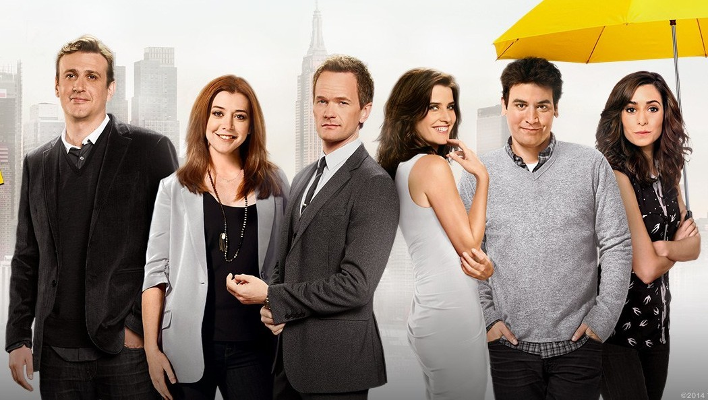

How I Met Your Mother / Cómo conocí a tu madre

En el año 2030, el arquitecto Ted Mosby (Josh Radnor) decide contarle a sus dos hijos la historia de cómo conoció a su madre. Por lo tanto, inicia una narración de recuerdos recopilados desde el 2005, año en el que dos de sus mejores amigos, Marshall Eriksen (Jason Segel) y Lily Aldrin (Alyson Hannigan), deciden casarse tras nueve años de noviazgo. Esa decisión hace que Ted, soltero empedernido, al igual que su otro mejor amigo Barney Stinson (Neil Patrick Harris), decida encontrar al amor de su vida desesperadamente. De una manera curiosa, aparece en ese instante la reportera canadiense Robin Scherbatsky (Cobie Smulders), que se convertirá en una nueva amiga del grupo y parte importante en la vida de Ted, a partir de este hecho, inicia la búsqueda implacable de una esposa que se convierta en madre de sus hijos.
Los Simpson
Es una serie estadounidense de comedia, en formato de animación, creada por Matt Groening para Fox Broadcasting Company y emitida en varios países del mundo. La serie es una sátira de la sociedad estadounidense que narra la vida y el día a día de una familia de clase media de ese país (cuyos miembros son Homer, Marge, Bart, Lisa y Maggie Simpson) que vive en un pueblo ficticio llamado Springfield
Desde su debut el 17 de diciembre de 1989, se han emitido más de 600 episodios, habiendo finalizado su trigésima temporada. En el final de la decimoctava temporada, el 20 de mayo de 2007, se emitió en los Estados Unidos el episodio 400: You Kent Always Say What You Want. En la mayoría del mundo los días 26 y 27 de julio de 2007 se estrenó Los Simpson: la película, la cual recaudó cerca de 526 millones de dólares en todo el mundo.
Los Simpson ha ganado numerosos premios desde su estreno como serie, incluyendo 33 premios Emmy, 32 premios Annie y un premio Peabody. La revista Time del 31 de diciembre de 1999 la calificó como la mejor serie del siglo XX,8 y el 14 de enero de 2000 recibió una estrella en el Paseo de la Fama de Hollywood. Los Simpson es una de las series estadounidenses de dibujos animados de mayor duración y el programa estadounidense de animación más largo. El gruñido de fastidio de Homer «D'oh!» ha sido incluido en el diccionario Oxford English Dictionary, mientras que la serie ha influido en muchas comedias de situación animadas para adultos.
Dragon ball y Dragon ball Z

Dragon Ball es un manga escrito e ilustrado por Akira Toriyama. Fue publicado originalmente en la revista Shōnen Jump, de la editorial japonesa Shūeisha, entre 1984 y 1995.
Su trama describe las aventuras de Gokū, un guerrero saiyajin, cuyo fin es proteger a la Tierra de otros seres que quieren conquistarla y exterminar a la humanidad. Conforme transcurre la trama, conoce a otros personajes que le ayudan en este propósito. El nombre de la serie proviene de unas esferas mágicas que al ser reunidas invocan a un dragón que concede deseos. En varias ocasiones resultan útiles tanto para Gokū y sus amigos como para la humanidad, aunque también son procuradas de forma constante por algunos seres malignos.
Hora de aventura

Es una serie animada de televisión creada por Pendleton Ward para Cartoon Network. La serie sigue las aventuras de Finn, un niño (va creciendo con la serie desde los 12 al principio hasta los 17 a la actualidad), y Jake, un perro con poderes mágicos con los que puede cambiar de forma, crecer y encoger a voluntad, que habitan en la post-apocalíptica Tierra de Ooo. A lo largo de la serie interactúan con los otros personajes principales de la serie: Princess Bubblegum, Ice King y Marceline la reina de los vampiros.
La serie sigue las aventuras de Finn (adoptado por una pareja de perros detectives) y su mejor amigo y hermano Jake, un perro con poderes mágicos con los que puede cambiar de forma y aumentar o encoger su tamaño. Viven en la Tierra de Ooo, un entorno lleno de personajes surrealistas y animales que hablan, donde la magia y la alta tecnología se unen para crear extraños y nuevos artefactos. A medida que transcurren los eventos, la trama se vuelve compleja, y la mágica Tierra de Ooo pasa a ser en realidad un escenario post-apocalíptico, debido al resultado de una terrible guerra nuclear que puso fin a la raza humana, donde los residuos tóxicos y la contaminación provocaron una serie de mutaciones que dieron origen a los simpáticos y los no tanto habitantes de Ooo. Finn, es uno de los pocos humanos supervivientes, realiza sus alocadas y divertidas aventuras junto a su fiel amigo Jake
El increíble mundo de Gumball

Es una serie de animación británico-estadounidense de comedia familiar, que se caracteriza por su original mezcla de elementos de animación tradicional, animación por computadora, stop motion y elementos reales, que fue creada por Ben Bocquelet.
La serie gira en torno a la vida de un gato azul llamado Gumball Watterson y sus frecuentes travesuras en la ficticia ciudad estadounidense de Elmore, acompañado por su hermano adoptivo y mejor amigo, Darwin.
Otros miembros de la familia Watterson son: una conejita rosada e intelectual hermana menor, Anaís; un conejo holgazán como su padre, Richard; y su madre Nicole, una gata, quienes a menudo se ven involucrados en las aventuras de Gumball.
Gumball y sus hermanos asisten a la escuela "Elmore Junior School" (Escuela primaria de Elmore), donde, a lo largo de la serie, interactúan con sus varios compañeros, principalmente con el interés amoroso de Gumball, Penn